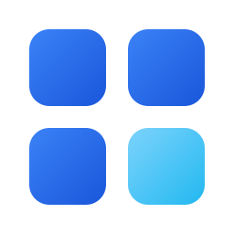

256px 에서 예쁜지는 중요하지 않습니다. 32px 와 16px 에서 무엇인지 알아볼 수 있는가가 판정 기준입니다. 이 앱은 작업표시줄(32px)과 컨텍스트 메뉴(16px)로 보일 일이 압도적으로 많습니다.
| 안 | 256px 원본 |
64px 바탕화면 |
32px 작업표시줄 |
16px 컨텍스트 메뉴 |
|---|---|---|---|---|
| B — Blueming후보피어나는 형태 | ||||
| C — 떠오르는 패널후보원본 | ||||
| C2 — 패널 개선신규타일·호 확대 | ||||
| D — 피어나며 떠오름신규B + C 하이브리드 | ||||
| A — 그리드참고용 |  |
| 안 | 64px | 32px | 16px |
|---|---|---|---|
| B — Blueming | |||
| C — 떠오르는 패널 | |||
| C2 — 패널 개선 | |||
| D — 피어나며 떠오름 | |||
| A — 그리드 |